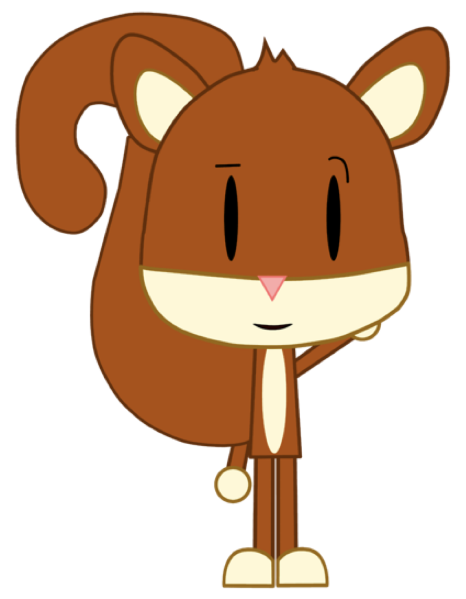
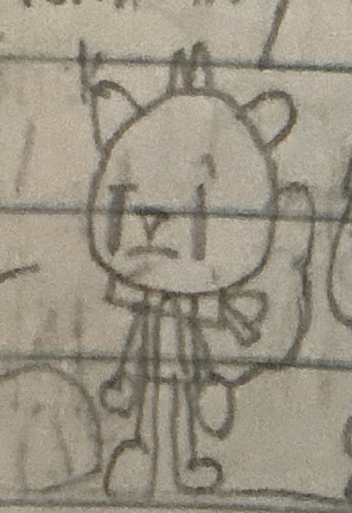

Simariki


| Simariki | |
|---|---|
| Character information | |
| Species | Squirrel |
| Gender | Male |
| Age | 17 |
| Occupation | Inventor |
| Academic performance | A–A+ grades |
| Residence | Starland, Planet Blue-Dust |
| Housemates | Jstar, Stickman and Junior |
Overview
Simariki is a 17-year-old male squirrel and one of the main characters in The Incredible Adventures of Jstar (TIAOJ), also known as redJSR TIAOJ. He lives in Starland on Planet Blue-Dust with Jstar, Stickman and Junior. Simariki is an inventor and is known for his strong academic performance.
Appearance
Simariki is a squirrel. His current design and original appearance are shown in the images above.
Personality and abilities
Simariki is an academically successful character who earns grades ranging from A to A+. He is also an inventor, giving him a technical and creative role among the characters. His academic achievements distinguish him from his housemate Stickman, who does not have a job.
Occupation
Simariki is an inventor. Further details about his inventions and projects can be added as more of his story is documented.
Residence
Simariki lives in Starland with Jstar, Stickman and Junior. He shares a household with characters who have different personalities, ages and interests.
Relationships
- Jstar: Simariki's friend and housemate. Jstar is an 18-year-old red alien who works at Spaceraids.
- Stickman: Simariki's housemate, an 18-year-old stick figure and longtime friend of Jstar.
- Junior: Simariki's seven-year-old housemate and Jstar's younger brother.